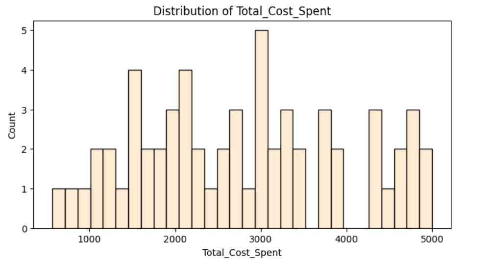
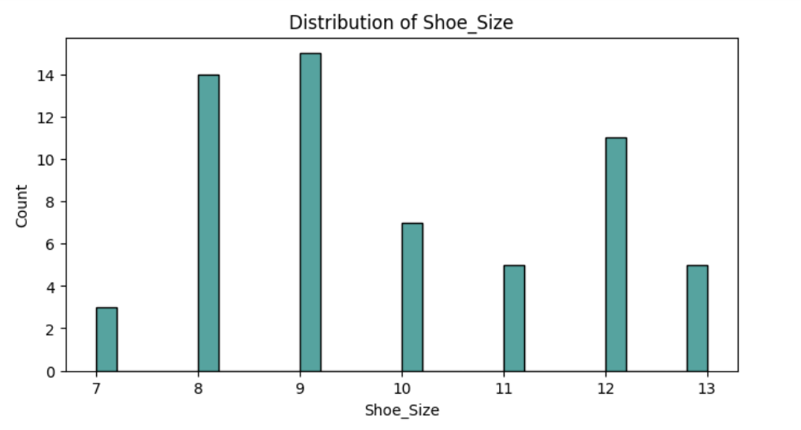
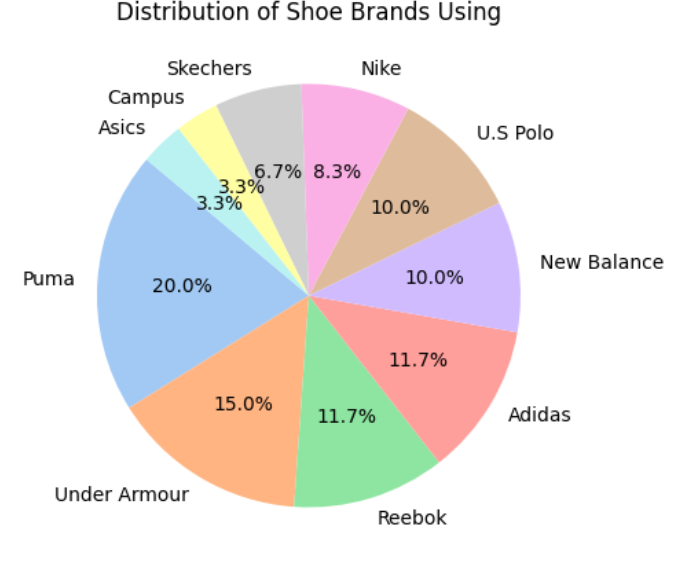
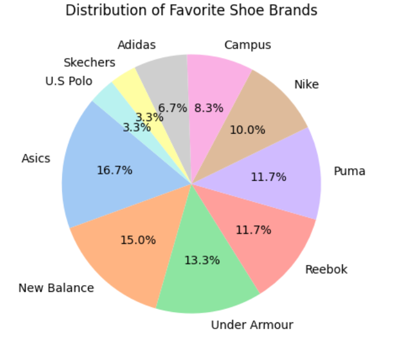
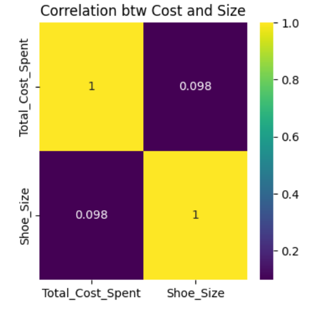

Exploring consumer preferences and spending patterns on shoe brands.
This dataset is a collection of information about shoe buyers. It tells us about the brands they use, their favorite brands, how much they’ve spent on shoes, and even their shoe sizes. Think of it as a sneak peek into the world of shoe lovers—what they buy, what they love, and how much they’re willing to spend.
The data was gathered through a survey of shoe buyers. People shared their preferences, spending habits, and even their shoe sizes. It’s like asking a group of friends about their favorite shoes and how much they’ve spent on them. This dataset is a snapshot of their answers.
Not quite! Like any good story, the data needed some editing. We cleaned it up by removing missing values, fixing inconsistencies, and making sure everything was standardized. Imagine tidying up a messy room before you can start working—that’s what we did with the data.
Actually, there were plenty of interesting findings! Let’s dive into a few:
In the bustling world of shoe buyers, there’s a wide range of spending habits. Some people are frugal, while others are willing to splurge on their favorite pairs. The distribution of Total Cost Spent tells us a story about how much people are willing to invest in their footwear.
Some people spent as little as 500 rupees, while others went all out, spending over 5,000 rupees on shoes! The distribution shows that most people spent between 1,000 to 3,000 rupees.This range is the sweet spot, where most buyers feel comfortable investing in quality footwear without breaking the bank.
In the world of shoe buyers, size matters. The distribution of Shoe Sizes tells us a story about the diversity of foot sizes and the preferences of shoe buyers. From the smallest to the largest, every size has its place in the market.
Shoe sizes ranged from 7 to 13, with size 9 being the most common. It seems like size 9 is the sweet spot for shoe buyers!
Sizes 8 to 12 are the most common, covering the majority of shoe buyers. This range represents the average foot sizes for most adults
In the bustling world of shoe buyers, there’s a wide array of brands to choose from. Some people stick to their tried-and-true favorites, while others love to experiment with new brands.
Let’s dive into the data to uncover the stories behind these choices .When it comes to brands, Puma and Under Armour were the most popular among the respondents. But when we asked about their favorite brands, Asics and New Balance took the lead. It seems like people love trying different brands but have a soft spot for a few favorites.
 People love Asics but often buy Puma or Nike due to accessibility or affordability.
New Balance and Under Armour strike a balance, being both loved and used.
Yes! We used regression analysis to see if we could predict total spending based on shoe size. The results showed a weak positive relationship, meaning that while shoe size does play a small role in spending, there are likely other factors at play too. It’s like saying taller people might spend more on shoes, but it’s not the whole story.
We found a weak positive correlation between total cost spent and shoe size. This means that people with larger shoe sizes tend to spend a bit more on shoes. Maybe bigger shoes cost more, or perhaps they just love shoes more!
We learned that shoe buyers are a diverse group with varied preferences and spending habits.Sizes 8 to 12 are the most common, covering the majority of shoe buyers. most people are willing to spent between 1,000 to 3,000 rupees. Some love Under Armour, while others swear by New Balance or Asics. Shoe size does play a small role in spending, but it’s not the only factor. At the end of the day, it’s all about personal preference—what feels good, what looks good, and what makes you happy.